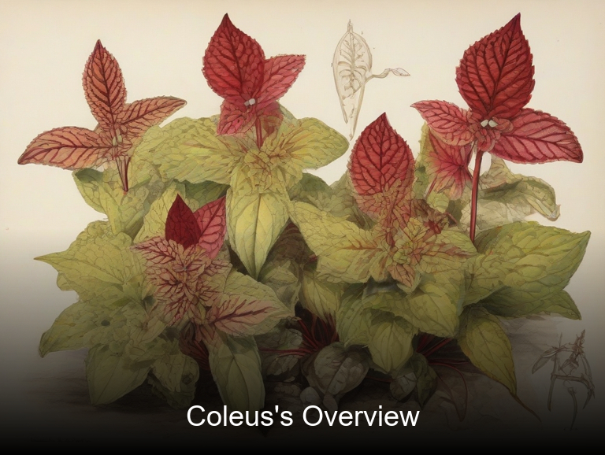
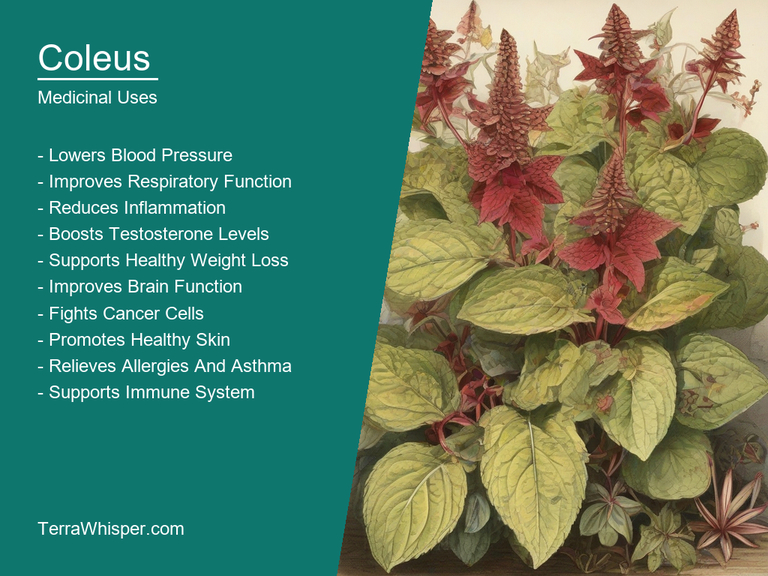
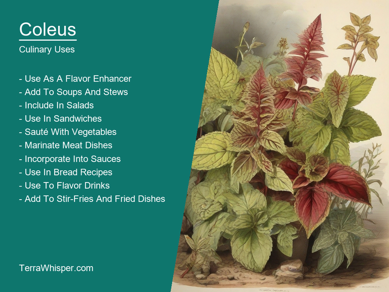
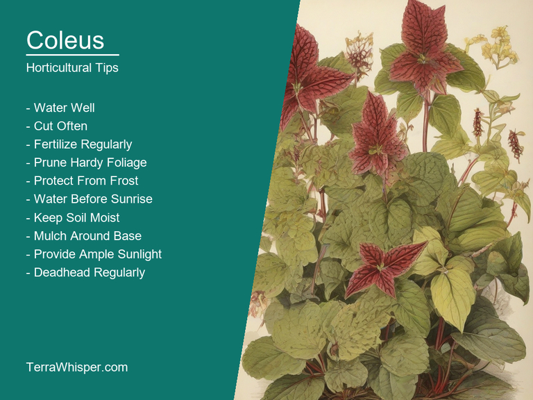
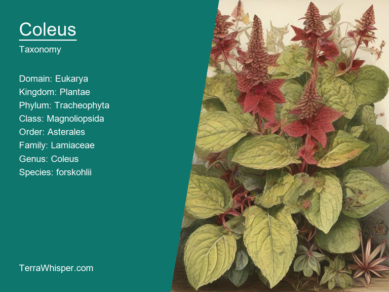
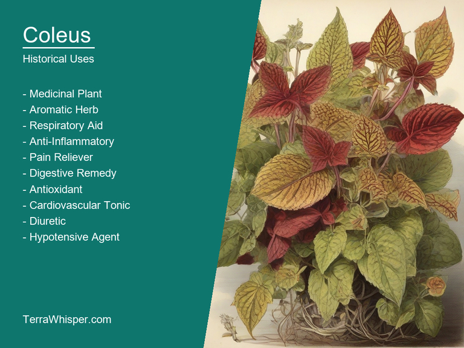

Coleus, scientifically known as Coleus forskohlii, is a versatile herbaceous perennial plant used in various ways due to its medicinal properties. Native to southern India and Sri Lanka, it has been utilized for centuries in traditional medicine systems like Ayurveda. The plant contains the chemical compound forskolin, which is known to exhibit beneficial effects on heart health, respiration function and weight management. Additionally, Coleus leaves can be used as a flavoring agent in culinary preparations, particularly in Asian and Thai cuisines where they are often added to curries and stir-fries.
As an ornamental plant, Coleus forskohlii is prized for its attractive foliage that comes in diverse shapes and a wide range of colors including green, purple, pink, yellow, white, and variegated. This characteristic has led to the development of numerous cultivars with unique leaf patterns and textures. The plant thrives well in partial shade or full sun and requires well-drained soil with average fertilization for optimal growth. Furthermore, Coleus plants can be easily propagated through stem cuttings and tend to flower under optimum growing conditions.
In terms of botanical significance and history, the cultivation of Coleus forskohlii began when it was first introduced into Europe during the mid-19th century. Since then, this plant has been extensively studied for its potential therapeutic uses and ornamental values in horticulture.
In this article, you will discover what are the medicinal and culinary uses of coleus. Then, you'll learn how to cultivate it, what is its botanical profile, and how it was used historically.
Coleus (Coleus forskohlii) has many health benefits, with significant actions related to respiratory issues, heart conditions, and weight management. It is an important herb in traditional medicine systems such as Ayurveda and Chinese Medicine, used for centuries due to its medicinal properties.
The following illustration lists the most important uses of coleus in medicine.

Coleus contains various active constituents that contribute to these health benefits, including forskolin, which has been extensively studied for its potential role in treating asthma, high blood pressure, and obesity. Other components like polyphenols, flavonoids, terpenes, and essential oils also play a part in the herb's therapeutic effects.
Different parts of Coleus plants are used for medicinal purposes, including leaves, stems, and roots. Leaves are often prepared as an infusion or decoction, while dried roots can be made into a powder and mixed with water to create a liquid extract. Coleus oil, which contains the highest concentration of forskolin, is also available in some markets.
There may be some side effects associated with Coleus consumption, such as gastrointestinal distress (including diarrhea), headaches, dizziness, and low blood pressure. It's important to consider individual health conditions, consult with a healthcare professional, and monitor for any adverse reactions while using the herb.
To minimize risks, it is essential to follow precautions when consuming Coleus. Avoid taking it if you are pregnant or breastfeeding due to its potential effects on the hormone system. People with existing heart conditions should also exercise caution as it might lower blood pressure further. Additionally, those with thyroid issues should consult a healthcare professional before using Coleus since it may interact with certain medications and natural therapies.
Coleus (Coleus forskohlii) is a herbaceous plant known primarily for its ornamental use due to its colorful foliage and various patterns. However, it also has culinary applications that are often overlooked. The primary reason why Coleus is used in cooking is the presence of forskolin, an active compound which contributes to a variety of flavor profiles.
The following illustration lists the most common uses of coleus for culinary purposes.

Coleus's flavor profile is both delicate yet complex, with hints of bitterness, minty notes, and earthiness that make it an intriguing addition to various dishes. Its aroma has been described as reminiscent of licorice or black liquorice, which can enhance the taste of certain sweet preparations. The unique combination of flavors offers numerous culinary opportunities to cooks experimenting with new recipes and ingredients.
Despite Coleus's leaves being generally considered inedible due to their bitter taste, some parts of the plant are edible and can be incorporated into culinary applications. Root tubers, for instance, can be used as a substitute for potatoes or yams when cooked and offer similar flavor and texture profiles. They may even provide additional health benefits compared to regular starchy roots given the presence of forskolin in Coleus.
When incorporating Coleus into your recipes, be mindful of using fresh leaves, which tend to be more potent in flavor than dried ones. Incorporate it sparingly and with precision. If you are cooking with dried leaves, it is advisable to add a little at a time while you prepare other ingredients to prevent the flavor from becoming too overwhelming.
While using Coleus in your culinary endeavors can enhance flavors and offer unique combinations, there are potential side effects and toxicity concerns that should be considered. Though consuming small amounts of fresh leaves or root tubers should generally be safe, overconsumption may lead to stomach irritation and gastrointestinal discomfort. Additionally, individuals who suffer from heart conditions or have low blood pressure, given forskolin's potential impact on cardiovascular functioning, are advised to exercise caution when using Coleus in their meals.
Coleus (Coleus forskohlii), also known as Forsythia, is a widely appreciated ornamental plant due to its vivid and intricate foliage patterns. As a horticultural marvel, this species has numerous characteristics that make it attractive to gardeners and landscape enthusiasts alike.
The following illustration lists the most important tips to cutlitvate coleus.

To grow Coleus successfully, start with high-quality seeds, taking care not to sow them directly in the ground as they may not germinate properly or spread their vibrant foliage. Instead, plant the seeds in individual pots filled with well-draining soil mixed with perlite to avoid root rot and ensure proper drainage. Place these pots in a warm environment (around 21°C) providing constant humidity for optimal seed growth. When they start germinating, gradually move the plants outside into partial shade or full sun to adapt them to their future conditions.
Coleus thrives best in rich, well-draining soil with a pH ranging from slightly acidic to neutral (around 6.0). Applying an organic fertilizer every six weeks helps maintain its lush foliage and vibrancy; this will ensure continuous blooming throughout the growing season. However, one must avoid excessive feeding as it may cause the plant to stretch in search of more sunlight.
As Coleus grows, it is essential to regularly check for pests and diseases that can compromise its health. In case you notice any signs of infestation or wilting leaves, promptly treat with organic solutions such as neem oil or insecticidal soap. Pruning is another important aspect of maintaining this plant's appearance; remove dead or damaged stems to encourage new growth and prevent diseases from spreading.
Coleus (Coleus forskohlii) adds an exquisite touch of vivid color and patterned foliage to any garden or landscape, making it an ideal choice for creating eye-catching displays. By providing the proper growing conditions, adequate care, and attentive maintenance, this plant will flourish and become a true horticultural masterpiece.
Coleus, with botanical name Coleus forskohlii, belongs to the domain Eukarya. Its taxonomy includes the kingdom Plantae, phylum Magnoliophyta, class Magnoliopsida, order Lamiales, family Lamiaceae, genus Coleus, and species Coleus forskohlii. The common names for this plant are Plectranthus barbatus or Hedeoma forskohlinum.
The following illustration display the botanical profile of coleus.

Coleus plants exhibit several variants with different leaf colors, such as pink, white, green, red, yellow, or burgundy. These variations arise from various gene mutations and can be easily propagated by taking stem cuttings. The most common variant is the 'Wasabi,' which has darker colored foliage, making it a popular choice for gardeners.
Coleus plants are characterized by their lush, green foliage with intricate patterns of various colors. They grow as annuals or perennials depending on climate and have a semi-succulent appearance due to their thick stems and leaves. The plant's leaves are oppositely arranged along the stem, forming an alternate leaf arrangement.
Coleus forskohlii can be found in various regions across Asia, Africa, Australia, and the Pacific Islands, such as Southeast Asia, India, Sri Lanka, China, Malaysia, Indonesia, Madagascar, Southern Africa, New Zealand, and Papua New Guinea. These plants thrive best in humid tropical climates with well-drained soil and moderate to high light conditions.
Coleus undergoes a typical life cycle common among flowering plants. It starts from seed germination, followed by the development of juvenile leaves (simple, opposite, or whorled), and then progresses towards forming mature foliage, small white or purple flowers in dense spike clusters (inflorescence), and finally, seeds are produced after pollination. The growth process is relatively fast, allowing for propagation via seed dispersal and stem cuttings to be successful.
The word "Coleus" is derived from Greek origin where it translates to 'snake-like'. It refers particularly not just to Coleus forskohlii but also several other unrelated species within the same family, like various flowers and plants that have a characteristic serpentine appearance.
The following illustration lists the most well known historical uses of coleus.

In cultural contexts around the world, coleuses - whether symbolically or literally - possess spiritual significance in different beliefs systems spanning religious institutions of indigenous people to ancient Greek practices with roots tracing back even thousands years ago as recorded history and anthropology suggest that they were used for more than aesthetical values but also held a place within rituals, ceremonies.
One prominent legend from Ancient Greece describes coleus's role in guiding heroic figures like Orpheus through the underworld using magical singing talents imparted on them as per specific folklore tales; it is believed that he played a lyre made of this plant, which assisting his soaring performances during encounters with Hades and Persephone.
Numerous literary figures including prominent writers such like Shakespeare have referenced coleus in their works as an object symbolic meaning has remained deeply imbedded within the cultural tapestry over centuries - evolving but retaining essence throughout this time period, thus reflecting a fascinating facet of our global artistic legacy.
With over two thousand years old history, Coleus or snake plant has become much more than mere decorative addition for people who appreciate its beauty. It's a symbol of spirituality in various cultures and religions making it an integral part to understand our collective human journey across time periods while also reflecting on how different beliefs have shaped the way we perceive these seemingly common everyday things found everywhere from homes, parks even hospitals nowadays where they continue serving diverse purposes both culturally-related as well medicinally significant.